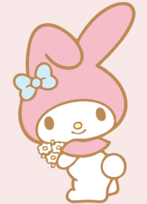
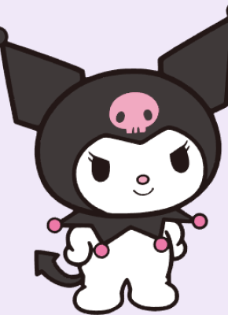

Sanrio Characters
-

마이멜로디
1975년 산리오에서 제작한 토끼 의인화 캐릭터. 산리오에서 출시한 캐릭터들 중 헬로키티 다음으로 인기가 가장 높다.산리오 캐릭터 대상 투표 순위가 일본 현지에서는 헬로키티랑 인기도가 비슷하다.
-
 헬로키티
헬로키티
일본의 캐릭터 회사 산리오에서 1974년에 출시한 오리지널 캐릭터. 일본의 대표 캐릭터이자 대중문화의 상징 중 하나로, 현재까지도 전 세계 사람들에게 많은 사랑을 받고 있는 캐릭터이다.
-

쿠로미
2005년에 출시된 산리오 캐릭터다. 마리랜드에 사는 아기토끼 모양의 인형으로, 핑크색 해골이 그려져 있는 검은색 두건과 분홍색 코, 화살표 모양으로 된 꼬리가 특징이다.
-
폼폼푸린
1996년에 산리오에서 만들어진 수컷 강아지 캐릭터. 폼폼푸린은 진갈색의 베레모가 트레이드 마크인 골든 리트리버입니다.우유와 엄마가 만든 푸딩을 좋아하며, 특기는 낮잠과 푸딩 체조예요. 푸린의 꿈은 점점 더 커지는 것이라고 하네요.